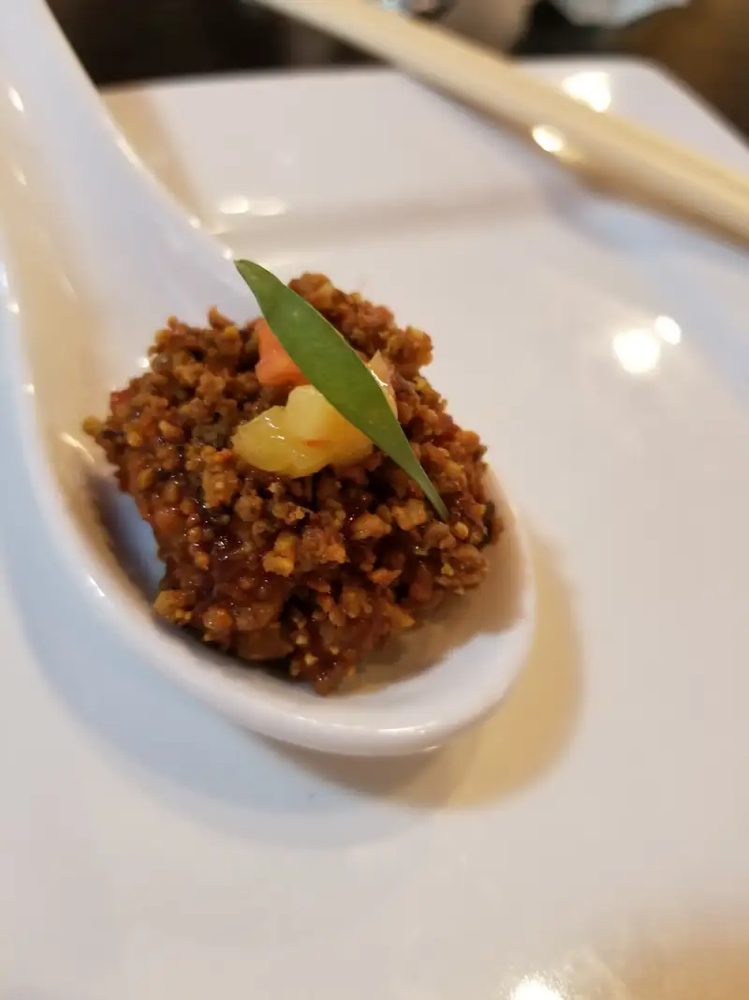
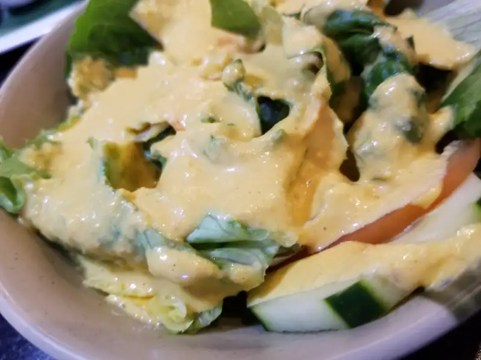
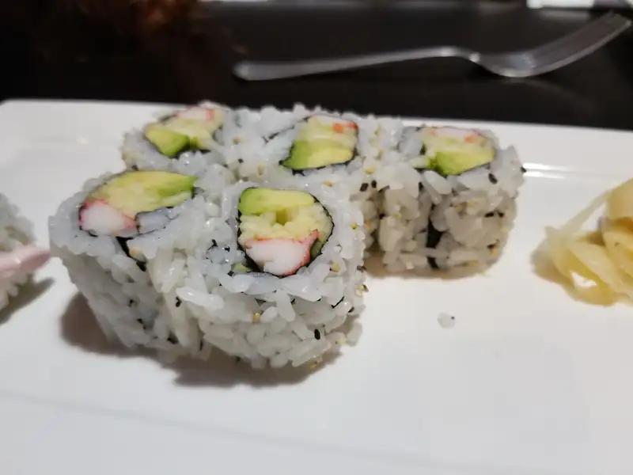
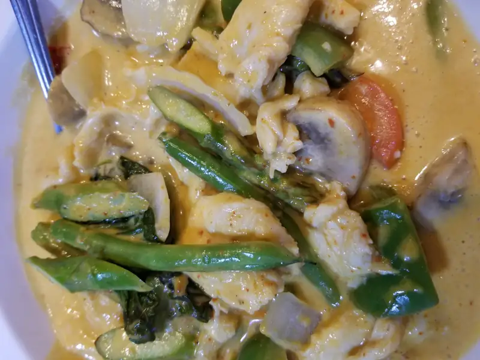
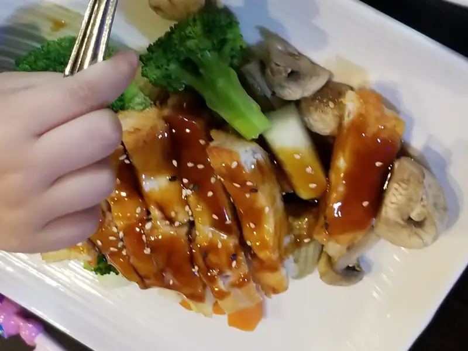
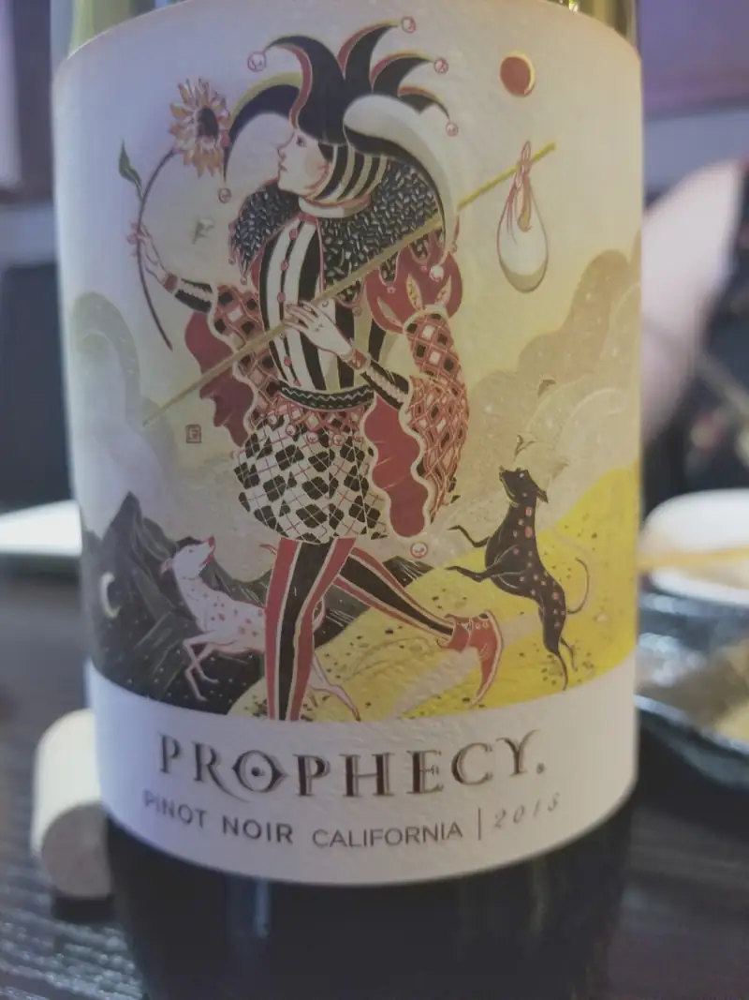

Mizu Asian Fusion Sushi Grill Dallas TX Restaurantes
Este pasado día de las madres lo celebramos en un restaurante nuevo para nosotros: Mizu Asian Fusion Sushi & Grill y déjame decirte que estuvo re-güeno, desde la entrada hasta.. bueno, esta vez no pedimos postre, pero digamos que desde la entrada hasta los platillos de niños, todo muy bueno. Solo les falló una cosa: no tenían udon!! Si, claro que a mí se me ocurrió querer pedir el único platillo de udon que tienen en el menú, así que gran, gran falla no es.
Comencemos con el desfile de platillos:
Tuna bites - cubos de atún cubiertos en pistaches molidos con "salsa" de mango

{kind=link}
Ensalada con aderezo japonés, muy similar a la de cualquier hibachi al que hayas ido

{kind=link}
California roll - tan bueno que "la que no come" se comió 2 rollos!!

{kind=link}
Curry rojo thailandés -- porque no hubo udon :(

{kind=link}
Teriyaki de pollo para niños

{kind=link}
Hibachi de res y camarones, con camarones "de los buenos"
{kind=link}
Un tinto que le iba muy bien al hibachi

{kind=link}